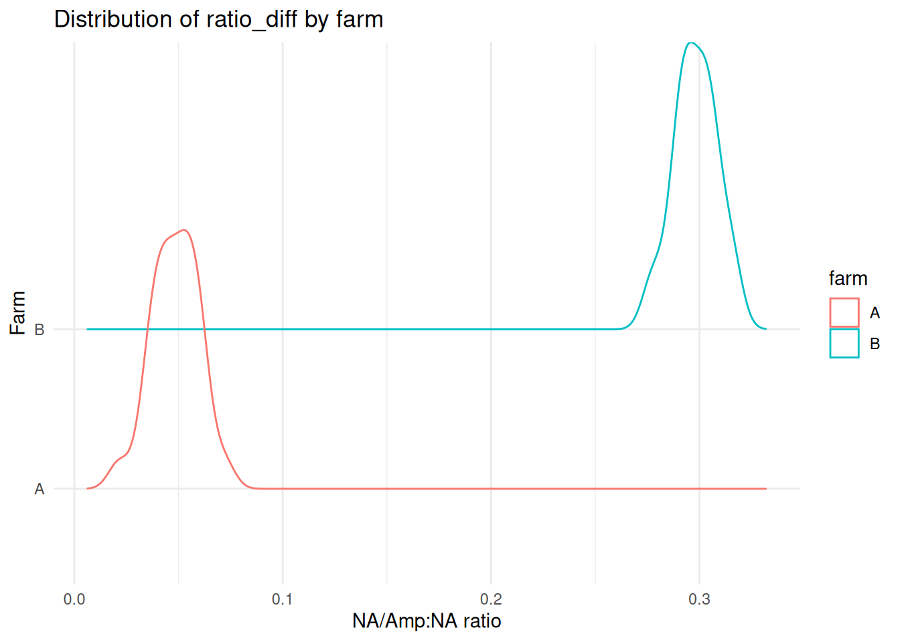
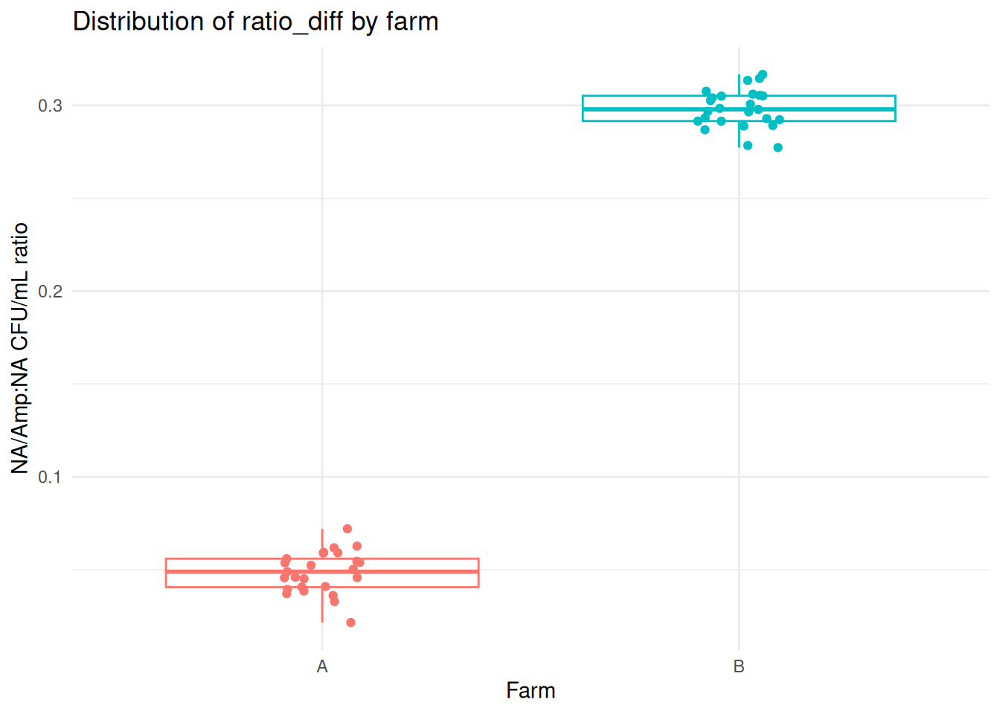

Click to see the R code
CFU_NA), and the CFU/mL obtained from the NA/Amp plate (CFU_NA_AMP).
With the data in Table 5.1 we can now calculate the difference in proportion of antimicrobial-resistant bacteria between farms.
R codeCFU_NA), and the CFU/mL obtained from the NA/Amp plate (CFU_NA_AMP).
The experiment is structured such that we expect a single categorical explanatory variable - the farm from which the sample was taken - to affect the observed values of CFU/mL. The farms have a single relevant point of difference: the use, or non-use, of antibiotics, which affects the number of bacteria from the sample that can survive on the selective NA/Amp plate. We assert that the variable farm can be interpreted as the influence (or not) of antimicrobials on the soil population.
We expect that the total number of bacteria in the soil may vary from sample to sample, for the same farm. For example, some parts of the farm might be more bacteria-rich than others (we have simulated this in the data). This variation will affect the number of bacteria recovered on each plate, but is not important to our scientific question.
We also expect that the total number of bacteria measured for a sample might differ for other reasons: small variations in pipetted amounts, small variations in temperature, biological randomness in general.
We call these kinds of variation random effects when they:
We have measured growth on both NA plates (CFU_NA) and NA/Amp (CFU_NA_AMP) plates for each sample. The values are linked by the originating sample, so these measurements are paired.
For any particular sample, we expect fewer bacteria to be recovered from the NA/Amp plate than the NA plate, because we expect that presence of Ampicillin will only allow a subset of the bacterial population that can grown on NA to grow on the plate with the antibiotic.
So, for a single sample, we expect the numbers of bacteria (as CFU/mL) recovered on the NA/Amp plate to be constrained by the number that are recoverable on the NA plate. We do not, for instance, expect to recover more CFU/mL from the NA/Amp plate than the NA plate for any sample. The two measurements are not independent of each other.
Our analysis choices need to take this non-independence into account. This excludes some kinds of statistical analysis (such as ANOVA).
We are interested in the difference between growth on an NA plate and growth on an NA/Amp plate for each sample. This implies that we need to derive a value representing that change, so that we can test whether it is different for farms A and B. There are two natural choices of derived value when we want to look at change:
A natural way to represent the difference between two values is to subtract one from the other as an absolute difference. Here, for instance, we might represent the change in CFU/mL for sample 1 as CFU_NA_AMP - CFU_NA, interpretable as the difference in the absolute CFU/mL count when adding ampicillin:
\[154677 - 3432477 = -3277800\]
That is, the change in CFU/mL between the two plates is a reduction of about 3mn CFU/mL. However we should not use this approach, here.
If we examine the CFU/mL for the NA plates of other samples (e.g. samples 2-6), they don’t even have 3mn CFU/mL to lose, and some absolute counts (e.g. sample 10) are really quite small, but there are still surviving bacteria on the NA/Amp plates. It also seems practically unlikely that the effect of adding ampicillin is to kill a specific number of bacteria each time, but that is what is implied if we use the absolute difference between CFU/mL counts.
Another, equally natural, way to represent difference between values is as a ratio or proportional difference. As there is a reduction in CFU/mL on the NA/Amp plate relative to the NA plate, we might represent this for sample 1 as CFU_NA_AMP / CFU_NA, interpretable as the proportion of CFU that survive when adding ampicillin:
\[154677 / 3432477 = 0.0451\]
That is, about 5% of the original population are still able to grow in the presence of Ampicillin.
This seems like both a more intuitively natural measure of the practical effect of applying Ampicillin (i.e. killing or preventing growth of a proportion of the whole population), and a more natural and consistent way to represent that effect when there is variation in the absolute number of bacteria being affected.
On the previous page the expanding note mentioned that you can think of exponentials/powers a little like multiplication, and logarithms a little like division. But there is a deeper mathematical relationship that connects multiplication and division.
When we raise the number 2 to the power 3, for instance, we multiply 2 by itself, 3 times, to get the number 8.
\[2^3 = 2 \times 2 \times 2 = 8\]
And the logarithm (base 2) of 8 is 3:
\[\log_{2}(8) = 3\]
which also means that we have to multiply 2 by itself 3 times to get the value 8.
Now, consider the number 128. 128 is also a power of 2, specifically 128 is 2 raised to the power 7:
\[2^7 = 2 \times 2 \times 2 \times 2 \times 2 \times 2 \times 2 = 128\] We can divide 128 by 8 to get \(128/8 = 16\).
We know then, that \(\log_{2}(128) = 7\) and \(\log_{2}(8) = 3\), and that \(2^4 = 16\) so \(\log_{2}(16) = 4\). This means that:
\[\begin{align*} \log_{2}(128) - \log_{2}(8) &= 7 - 3 \\ &= 4 \\ &= \log_{2}(16) \\ &= \log_{2}(128/8) \end{align*}\]
This might seem like magic the first time you see it, but this relationship holds for logarithms of the same base \(n\):
So we could get to the same end result working in logarithms as we do by using division. Here, we’re using division for simplicity.
To calculate the proportion of antibiotic-resistant bacteria in the population for each sample, we perform the division CFU_NA_AMP / CFU_NA to obtain ratio_diff in Table 4.2, below.
We visualise the distribution of ratio_diff in Figure 4.1, where we can see that the two distributions are fairly symmetrical, and do not seem to overlap. The proportion of bacteria recovered on NA/Amp from farm B (≈0.3) seems to be notably higher than that for farm A (≈0.05). The difference is clear enough that it hardly seems worth performing a statistical analysis.
R codeggplot2::ggplot(dfm, ggplot2::aes(x=ratio_diff, y=farm, colour=farm)) +
ggridges::geom_density_ridges(fill=NA) +
ggplot2::labs(title="Distribution of ratio_diff by farm",
y="Farm", x="NA/Amp:NA ratio") +
ggplot2::theme_minimal()Picking joint bandwidth of 0.00506
ratio_diff, the proportion of the bacterial population for farms A and B that is antimicrobial resistant.
We can represent the same data in a box-and-whisker plot, as in Figure 4.2.
R codeggplot2::ggplot(dfm, ggplot2::aes(y=ratio_diff, x=farm, colour=farm)) +
ggplot2::geom_boxplot() +
ggplot2::geom_jitter(width=0.1) +
ggplot2::labs(title="Distribution of ratio_diff by farm",
x="Farm", y="NA/Amp:NA CFU/mL ratio") +
ggplot2::theme_minimal() +
ggplot2::theme(legend.position="none")
ratio_diff, the proportion of the bacterial population for farms A and B that is antimicrobial resistant.